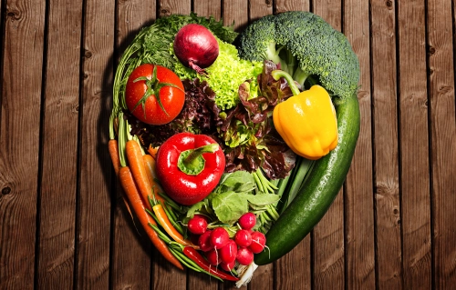

Weganizm - styl życia, którego jedną z cech jest stosowanie diety wegańskiej, czyli rezygnacja ze spożywania produktów zwierzęcych.
Weganie rezygnują ze spożywania nie tylko mięsa, ale także innych produktów pochodzenia zwierzęcego, których wytwarzanie wiąże się z eksploatacją zwierząt, takich jak: nabiał (w tym jajka) oraz miód. Weganie nie stosują kosmetyków i nie kupują ubrań powstałych z odzwierzęcych surowców (skóry, futra, wełna, jedwab), nie biorą udziału w rozrywkach, w których wykorzystuje się zwierzęta (polowania, zoo, rodeo, cyrk, oceanarium). Bojkotują także wszelkie produkty testowane na zwierzętach. Zawieszenie przestrzegania tych zasad dopuszczają tylko, kiedy jest to niezbędne do przetrwania.
Ludzie decydują się na weganizm ze względów etycznych, zdrowotnych, ekologicznych, duchowych, religijnych, społecznych lub ekonomicznych.
